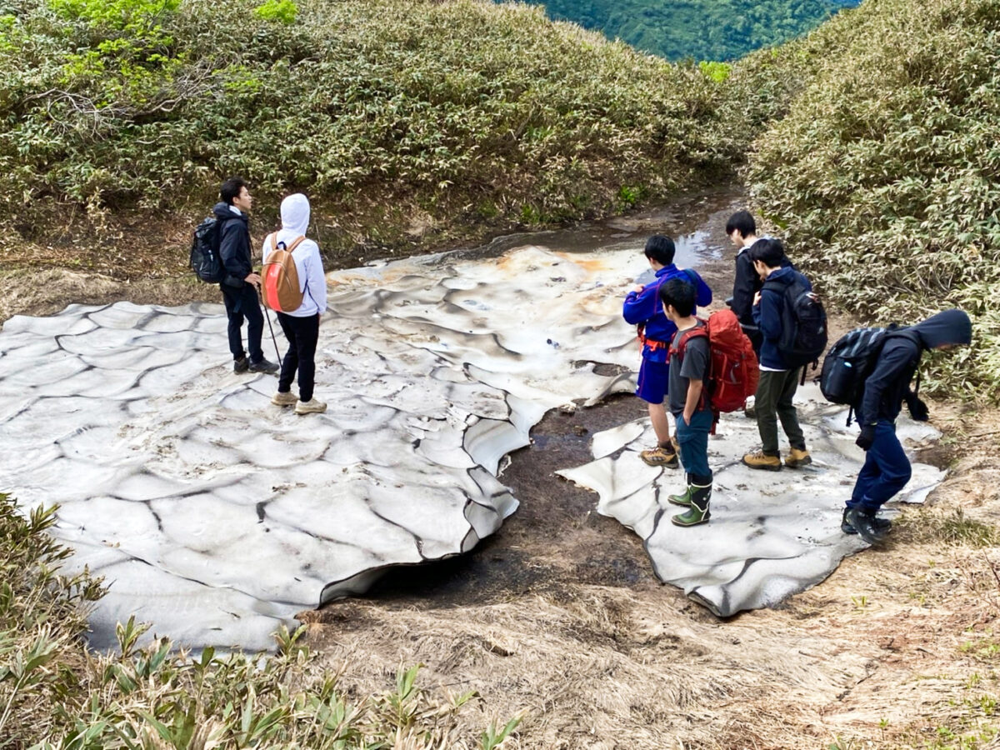
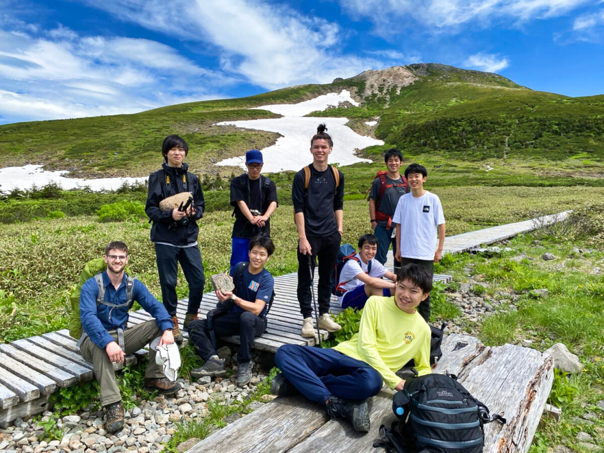
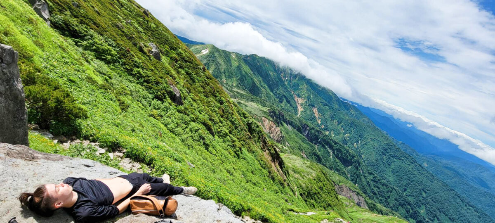

The first 30 minutes,we had to climb inside the bushes. Because we couldn't see the view much, it was more stressful. But after we came out of the bushes, the view was fantastic and we were able to see some snow. In the picture below, you can see us stepping on the sonw. Here we had fun sliding and throwing snow balls for a bit. In the other picture you can see how beautiful the view is and I thought that I was actually walking in heaven.
 Getting near the summit, we went to a place called Kurobokoiwa. There were huge rocks that were there because of Volcanic bombs carried from the summit by pyroclastic flow. We all lie down on the rocks and sunbathed. The view and the comfortableness was unbelieveable. I thought that I was lying down in heaven and I wanted to stay here forever. But I got burned so much and my face was red like a Japanese monkey the next day.
